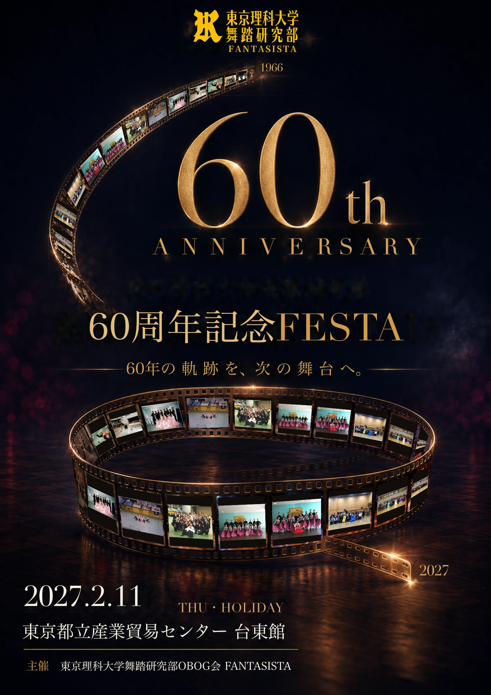

世代を超えた交流
世代を超えた交流
 NEXT GENERATION
NEXT GENERATION


超早期申込割引の期限を10月31日まで延長します
超早期申込割引（2,000円引き）を10月31日（土）まで適用します。

参加申込受付中Save the Date
もう一度、集まろう。もう一度、歴史を動かそう。
同じフロアで夢中になった同期、先輩、後輩と、あの青春の思い出をもう一度。それぞれの記憶を持ち寄り、まだ誰も見ていない60周年の一日を一緒につくる。60年で受け継いだ踊りと仲間のつながりを、世代を超えた交流から現役の次の挑戦へ手渡します。
内容・開催時刻は予定です。参加費・寄付プランと返礼内容をご確認のうえ、お申し込みください。
1966年創部の舞踏研究部は2026年に60周年を迎え、その記念FESTAを2026年度内の2027年2月11日に開催します。
1〜10年｜昭和41〜43年1966–68
Latest Updates
超早期申込割引（2,000円引き）を10月31日（土）まで適用します。
参加費・寄付プランと返礼内容をご確認のうえ、お申し込みください。
開催概要、当日の予定、参加費・寄付、FAQ、クロニクルを公開しました。
Demonstration
若代愼・辰巳友莉亜組、寺門駿・寺門彩香組、飯塚隆嗣・有村玲音組、矢嶋太門・下垣内咲帆組、伊藤裕貴・柳下真嬉組。第一部のフロアを彩る出演者をご紹介します。
イベント案内Event Guide
懐かしい仲間との再会だけでなく、現役生の活動を知り、舞踏研究部のこれからを一緒に応援できる一日を目指しています。最近踊っていない方も、初めてFANTASISTAの催しに参加する方も歓迎します。
60年の歩みを写真や資料によるギャラリー展示で振り返ります。記念ムービーの放映も検討しています。
現役生によるダンスを間近で楽しめるプログラムを予定しています。
プロとして活躍する理科大OBOGによるデモンストレーションを予定しています。
参加者がフロアで踊り、世代を超えてダンスを楽しめる企画を予定しています。
踊る方も見る方も楽しめる、現役支援につながる時間を予定しています。
18:00〜20:00、同じ建物内の台東区民会館9階・特別会議室（特）および（大）で、世代を超えて語り合える場をつくります。
企画内容・実施順・時間は調整中です。開催日時、会場、参加費、申込締切、プログラムの最新情報は、この特設サイトで順次お知らせします。
Memory AlbumPhoto Chronicle
競技会、練習場、理大祭、合宿、仲間との時間。創部期から2010年代までの記録を、年代を越えて並べました。
写真候補を読み込んでいます。
Behind the FloorMemory
学生競技ダンスは、外から見れば華やかな世界です。けれど、その時間を過ごした私たちには、フロアの外にあった緊張や迷い、努力や悔しさもまた、大切な記憶として残っています。
一人では成立しない競技だからこそ、距離感や呼吸に悩む日もありました。うまくいく日も、同じ方向を向けなくなる日もある。それでも、誰かと一曲をつくる経験は、学生競技ダンスならではの記憶です。
レギュラーを目指して練習した時間。結果表の前で交わした言葉。同期と競い、先輩の背中を追い、後輩に見られる立場になっていく。その重みを知っている人たちが、このFESTAに集まります。
限られた時間、限られた場所、限られた体力の中で、もう一度だけ踊った夜。研究、単位、進路、生活の事情を抱えながら、それでもフロアに向かった日々がありました。
予選は、チェック数で次へ進む世界でした。あと一つ届かなかった日、思いがけず通った日、結果表の前で言葉が出なかった日。その一瞬の重みを、きっと多くのOBOGが覚えています。
思うように動けなかった日、結果が出なかった日、誰かの上達がまぶしかった日。その時は言葉にできなかった感情も、年月を経た今なら、懐かしい仲間と笑って話せるかもしれません。
Seasonal MemoryYear Flow
春の新歓から、冬全のフロアまで。舞研の一年は、ただ大会が並ぶだけではありませんでした。新歓、理工戦、春東都、春東部、夏合宿、シャドーコンペ、松前杯、秋東都、秋東部、理大祭、桜凛祭、冬全、そして春合宿へ。季節ごとに、期待、悔しさ、高揚、緊張、誇りがありました。
4月の新歓。新歓ハイク、新歓ダンパ、各種交流、ステップ講習会。初めて聞く種目名、先輩の踊り、慣れない礼儀。5月には、1年生がワルツとジルバで理工戦デビューを迎えました。
2年生以上にとって春は、春東都、春東部へ向かう季節。団体成績、Ⅰ部校への昇格、夏全出場の可能性。その結果が、次の景色を大きく変えていきました。春東部の結果は、Ⅰ部校や夏全出場に関わる大きな節目でした。
夏合宿は、体力も気持ちも試される時間でした。最終日のシャドーコンペに向けて、踊り込み、先輩からの厳しい声、何度も繰り返したワルツのボックス。つらかったはずなのに、なぜか今も鮮明に残っている記憶です。
松前杯は、1年生にとっては実質的なデビュー戦。2年生にとっては固定カップルで迎える初戦。3年生にとっては、秋のレギュラー戦へ向けた試金石でした。期待、悔しさ、高揚が入り混じる、秋の始まりの記憶です。
秋東都、秋東部へ進む中で、レギュラーに選ばれること、選ばれないこと、結果表の前で味わう一喜一憂がありました。予選はチェック数で進みます。あと一チェックで届かなかった日も、思いがけず次へ進んだ日もありました。
競技だけが舞研ではありませんでした。理大祭や桜凛祭でのデモ披露、出店、準備、片付け。試合とは違う表情で、仲間と過ごした秋の記憶もあります。
冬全は単科戦。1組1種目に絞られるからこそ、4年生はその一種目にすべてを注ぎました。種目が絞られる分、入賞のチャンスも広がる。けれど、その一曲に向き合う緊張は、普段の試合とは違う重さがありました。
冬全当日の緊張は特別でした。1チェックの重み、涙の下位決勝、上位決勝で踊るファイナルソロ。そして、優勝者だけに許されるオナーダンス。届かなかった悔しさも、フロアに残した誇りも、それぞれにとってかけがえのない宝物です。
冬全が終わると、4年生が抜けた少し寂しい春合宿。新しい幹部、新しい体制、新しい練習場の空気。そしてまた4月、新歓が始まる。そうして舞研の一年は、次の世代へ受け継がれていきました。

シャドーコンペ、踊り込み、集合写真などを掲載予定

理大祭、桜凛祭、デモ披露、出店などを掲載予定

ファイナルソロ、オナーダンス、4年生の最後の一曲などを掲載予定
KeywordsMemory Cues
言葉を見ただけで、音楽や練習場の空気まで思い出す。そんな舞研だけの言葉を、少しずつ並べました。

背番号をつけて臨んだ一日を思い出す写真を掲載予定です。

踊っても踊っても足りなかった時間を伝える写真を掲載予定です。

同期、先輩、後輩と過ごした時間が伝わる写真を掲載予定です。
開催概要Overview
第二部：同じ建物内の台東区民会館 9階 特別会議室（特）および（大）
〒111-0033 東京都台東区花川戸2-6-5
東京メトロ銀座線・東武スカイツリーライン「浅草駅」から徒歩5分、都営浅草線「浅草駅」から徒歩8分、つくばエクスプレス「浅草駅」から徒歩9分です。
会場に一般駐車場はありません。お車でお越しの際は近隣駐車場をご利用ください。
参加費・寄付プランは本ページでご案内しています。受付時間や各企画の進行は、決定次第順次更新します。
参加費・寄付・返礼Fees & Support
会いたかった仲間との再会から生まれる力を、現役の次の挑戦へ。参加すること、仲間を誘うこと、寄付で支えること、当日現役と踊ること。そのすべてが、次のムーブメントをつくります。
Our Movement
集計中
REUNION
OBOG参加申込集計中
ご家族・ご友人の参加集計中
参加している卒部年代は、申込が一定数に達してから表示します。
参加目標120名／参加申込受付中
NEXT CHALLENGE
寄付で応援した方0名
寄付相当額0円
まずは第1目標へ
入金確認済みの寄付プランを集計します。
2017年、FANTASISTAと現役は双方の工夫と負担でFMドレスをつなぎました。その翌年、現役は創部52年目にして初めて、冬の全日本学生競技ダンス選手権大会・フォーメーション部門の舞台に立ちました。
50周年でつないだドレスは、52年目の史上初を見届けました。 60周年の再会を、現役の次の挑戦につなげます。
60周年から始める次の挑戦を読むEARLY ENTRY / 10月31日まで
2021〜2025年度卒部（OBOG1〜5年目）の方は、超早期申込2,000円と卒部年次4,000円の合計6,000円引き。通常参加は第一部＋第二部が9,000円、第一部のみなら5,000円です。参加者向け寄付プランにも、同じ割引を適用します。
割引額は通常参加からプラチナまで共通です。「第一部のみ」を選ぶ場合は、割引後の金額からさらに4,000円を控除します。卒部年次は2026年4月1日時点を基準とします。
第一部と、2時間のビュッフェ・飲み放題を予定する第二部懇親会を含みます。
申込時期・卒部年次による割引、懇親会不参加時の控除があります。基準参加費、プランごとのダンスタイムチケット、寄付相当額を組み合わせた支払総額です。
ブロンズ、シルバー、ゴールド、プラチナをご用意しています。当日参加できない方も、現役支援と60周年記念事業に加わることができます。
スタンダード、アドバンス、プレミアムをご用意しています。参加者向け寄付プランのダンスタイムチケットは、券面相当額をすべて踊った現役本人へ還元します。 寄付の活用、返礼、割引、ご家族・ご友人の参加料金などの詳細は、参加費・寄付ページでご確認ください。
当日のプログラムProgram
60周年を祝い、世代を超えて交流できるプログラムを予定しています。実施順や時間は、決定次第このページでお知らせします。
写真・資料による60周年記念展示と映像企画
現役生によるデモンストレーション
理科大OBOGプロによるデモンストレーション
参加者によるトライアル
世代別テーブル交流・近況共有
写真・資料展示コーナー
現役支援・活動紹介の時間
記念撮影・エンディング
協賛・寄付・支援Support
個人寄付は、参加者向けのプラチナ・ゴールド・シルバー・ブロンズと、欠席者向けのスタンダード・アドバンス・プレミアムをご用意しています。企業協賛、広告、物品協力は事務局へご相談ください。
よくある質問FAQ
質問を4つのカテゴリに整理しました。詳しい回答はFAQページで確認できます。
参加対象、同伴者、申込後の変更など。
参加・申込のFAQを見る服装、ダンスタイム、トライアルなど。
当日のFAQを見る参加プランの料金内訳、割引と各種支払い方法。
支払いのFAQを見る寄付プラン、返礼、写真提供、協賛相談など。
支援のFAQを見る記念FESTAについてAnniversary
60周年記念FESTAは、ただ過去を懐かしむだけの場ではありません。
背番号をつけてフロアに立った日。
練習場で同じ曲を何度もかけた日。結果に喜び、悔しさを飲み込み、それでも次の一曲へ向かった日。
それぞれの時代に、それぞれの舞研がありました。このFESTAは、その記憶を持ち寄り、世代を超えて語り合うための一日です。
同期、先輩、後輩、現役生、関係者の皆さまが集い、東京理科大学舞踏研究部の60年を祝う場として開催いたします。
華やかなフロアの奥にあった時間も、夏合宿の踊り込みも、あと一チェックの悔しさも。今なら笑って語り合える。そんな再会のきっかけになる一日を目指します。
WelcomeInvitation
卒部から時間が経っていても、今は踊っていなくても大丈夫です。大切な方と一緒に、理科大舞研の60周年を祝い、これからを応援する一日を目指しています。
東京理科大学舞踏研究部で活動した、すべてのOBOG
同期、先輩、後輩との再会を楽しみたい方
現役生の今を知り、これからの活動を応援したい方
OBOGのご家族・ご友人として、一緒に60周年を盛り上げたい方
踊る・踊らない、競技成績、現在のつながりは問いません。久しぶりのOBOGも、ご家族・ご友人も、皆さまで気軽にご参加ください。
Photo ArchiveContribute
60周年記念FESTAに向けて、競技会、練習風景、フォーメーション、集合写真などを掲載・展示できるよう準備しています。
60年のクロニクルに収めた写真を、年代を越えて紹介しています。ほかにも写真や資料をお持ちの方は、FANTASISTA会までお知らせください。
クロニクルから写真を選んでいます。
今後の更新予定Coming Updates
受付時間、服装、トライアルの参加方法、出演者、当日の詳しい進行は、決定次第「最新情報」と各案内ページで順次お知らせします。
当日は、60年の歩みを振り返る時間、世代を超えて語り合う時間、懐かしい仲間と再会する時間を準備していく予定です。
久しぶりの方も、現役に近い世代の方も、どうぞ続報をお待ちください。
協賛をご検討いただける企業・関係者の皆さまには、歴史ある学生舞踏文化と、世代を超えたFANTASISTAのつながりに寄り添う記念事業として、改めてご案内いたします。